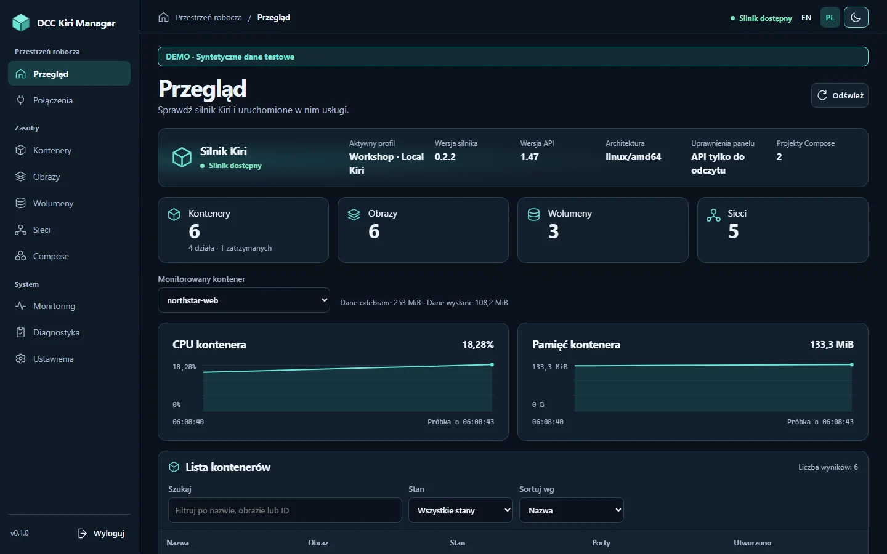

Docker Compose
Uruchom panel z nazwanym wolumenem i portem lokalnym. Na zgodnym hoście Linux dołącz konfigurację socketu.
Zobacz, co działa w Kiri.
Przeglądaj kontenery, obrazy, wolumeny, sieci i projekty Compose w jednym lekkim panelu.

Niezależny panel tylko do odczytu dla kontenerów Kiri, usług lokalnych i projektów Compose.
Środowisko uruchamia panel, a zatwierdzony socket Unix łączy go z Kiri.
Zrzuty pokazują działający panel z syntetycznymi danymi oznaczonymi jako DEMO.
Uruchom panel lokalnie. Kreator przeprowadzi Cię przez instalację Kiri i podłączenie zatwierdzonego socketu.
Uruchom panel z nazwanym wolumenem i portem lokalnym. Na zgodnym hoście Linux dołącz konfigurację socketu.
Użyj zgodnego CLI, wskazując kontekst Kiri. Montowanie socketu zależy od hosta.
Przygotowany wpis instaluje panel w Dockerze. Dostępność w sklepie zależy od zweryfikowanego wydania OCI.
Linux amd64 i arm64, Windows/WSL2, macOS oraz Raspberry Pi OS. Uruchomienie panelu i łączność z Kiri mają osobne wymagania.
Oficjalne pliki Kiri ↗Lokalne sesje administratora, ochrona CSRF i lista zatwierdzonych socketów. Zamontowany socket zachowuje uprawnienia silnika. Poza hostem używaj HTTPS.
Dokumentacja ↗Panel 0.1.0 przeszedł testy z Kiri Lite 0.2.2 na Ubuntu 24.04.5 LTS na amd64 i arm64. Wyniki GitHub Actions ↗
| Host | Architektura | Środowisko panelu | Połączenie z Kiri | Status |
|---|---|---|---|---|
| Windows 10/11 | amd64 | Docker Desktop | Socket niedostępny między VM | Nieobsługiwane |
| Windows 10/11 | amd64 | Kiri / WSL2 | Ta sama dystrybucja WSL | Niezweryfikowane |
| Ubuntu 24.04.5 LTS | amd64 | Docker | Dedykowany socket Unix | Obsługiwane |
| Ubuntu 24.04.5 LTS | amd64 | Kiri | Dedykowany socket Unix | Obsługiwane |
| Ubuntu 24.04.5 LTS | arm64 | Docker | Dedykowany socket Unix | Obsługiwane |
| Ubuntu 24.04.5 LTS | arm64 | Kiri | Dedykowany socket Unix | Obsługiwane |
| Debian | amd64 | Docker | Dedykowany socket Unix | Niezweryfikowane |
| Debian | amd64 | Kiri | Dedykowany socket Unix | Niezweryfikowane |
| Debian | arm64 | Docker | Dedykowany socket Unix | Niezweryfikowane |
| Debian | arm64 | Kiri | Dedykowany socket Unix | Niezweryfikowane |
| Raspberry Pi OS | arm64 | Docker | Dedykowany socket Unix | Niezweryfikowane |
| Raspberry Pi OS | arm64 | Kiri | Dedykowany socket Unix | Niezweryfikowane |
| macOS Intel | amd64 | Docker Desktop | Socket niedostępny między VM | Nieobsługiwane |
| macOS Intel | amd64 | Kiri | Socket niedostępny między VM | Nieobsługiwane |
| macOS Apple Silicon | arm64 | Docker Desktop | Socket niedostępny między VM | Nieobsługiwane |
| macOS Apple Silicon | arm64 | Kiri | Socket niedostępny między VM | Nieobsługiwane |
Plan obejmuje ograniczone uprawnienia zapisu i dodatkowe warianty łączności. Migracja zależy od izolowanych testów kopiowania i wycofania.
Instalacja, konfiguracja i diagnostyka.
Wydanie GitHub i obraz OCI.
GHCR ↗Projekt DCC autorstwa hattimon na licencji MIT.
Wesprzyj autora i projekty DCC.